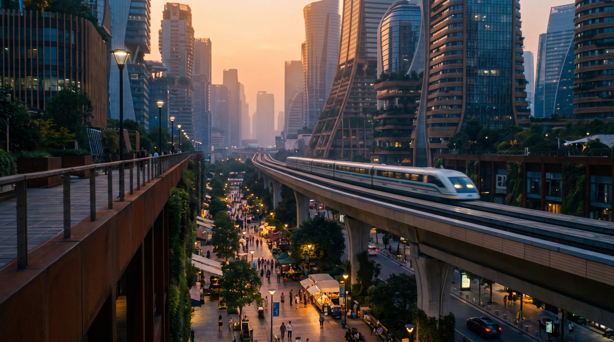

06 — Daily Life
Daily Life
How people live in 2095: what they use, wear, eat, build, say and believe.
06 — Daily Life
How people live in 2095: what they use, wear, eat, build, say and believe. The world's rules are in 01 - Trilogy Bible.md, the people in 02 - Cast.md, and the blocs and places in 05 - World.md. Words in italics are the everyday words of the age; prose may use them, and any new one needs approval.
06 — Daily Life · 1
Principles
The dial. Everything is as advanced as real physics allows by 2095. Only three things hold it back: physics, money and the Long Heat. Nothing is magic, and nothing is retro for its own sake.
Seventy years. 2095 is as far from 2026 as 2026 is from 1956. Fusion, implanted interfaces, brewed food, carbon pulled from the air, synthetic persons and rocketplanes are as ordinary as phones and jet travel are now. Bodies, gravity, the speed of light, the weather and families are not new. They are what the story is about.
Most of the future exists because of the heat. Sea walls, cooling, the white sky, rectenna fields, the forecasting systems: the technology people notice was built to survive the Long Heat. Climate and invention are one subject.
Constraint makes style.
| Where | What shapes everything |
|---|---|
| Continuity cities | Heat, surveillance and plenty. Smooth, quiet, sealed, cooled |
| Dark towns | Heat, water and scarcity. Shade, rotas, mended things, open windows, noise |
| Luna Haven | Air. Grown walls, quiet voices, nothing wasted, the air budget at every junction |
| Cobalt Basin | Delay, dust and supply windows. Everything repaired, everything logged, Earth seen minutes late |
| The ship | Mass. Every kilo is paid for in fuel |
The new sits on the old. The Empire State Building still stands inside the Polder's wall. Vila Verde's old train line still runs, late. A 2095 street has buildings from 1930, 1990 and 2080 on it, and the oldest are often the best loved.
Class shows in material. The linked live with seamless, silent, cooled things that work without being touched. The dark towns live with handhelds, solar panels, hand-soldered boxes and things repaired three times. Both are high-technology; one is serviced, the other is maintained by its owners.
Every object has a keeper. Someone fixes the pump, tunes the mesh, scrubs the dust from the seals. The trilogy's heroes are mostly keepers.
The future is ordinary to the people in it. No one marvels at their own world. Prose names things the way their users do: short, worn smooth, a little rude.
06 — Daily Life · 2
The technology baseline
The interface
| What it is | A mesh implant laid along the skull behind the ear, with a hair-thin trace down the side of the neck. People call it the lace; the trace is the thread |
| What it does | Draws images straight onto the eye (the overlay), hears speech the wearer barely voices, monitors the body, opens doors and pays. Link-capable models add a lattice socket: a small, cool port behind the ear |
| Who has one | Almost everyone. Continuity children are laced at twelve, with their school medicals. Compact children choose at sixteen, and can say no |
| Tiers | Medical (health and overlay), working (overlay, translation, credit) and link-capable, which is newer, dearer and the only kind the Gate and the Directorate can read deeply |
| Off | A press behind the ear. Going dark means switching off. Some mesh communities switched theirs off in the risk-scoring years and keep them off; their children carry handhelds |
| Cost to the body | Fog after every link session. An interface that burns out ends a person's linking for good |
| Tells | Someone using their overlay looks slightly past you. Linked people murmur to people who aren't there, lips barely moving; in the Compact this is rude at the table |
The handheld
A palm-sized slab of glass and air-carbon with a fold-out screen, a camera and a mesh radio. It is what the dark towns, children under twelve, and anyone with their lace switched off carry. Handhelds are repaired, passed down and personalised; nobody in Vila Verde has a new one.
Machines that are not persons
Automation runs almost everything and is not anyone. The overlay's helpers have no names; people say the system, and in the Continuity they mean it. Drones inspect the sea walls, crawlers scrub the rectenna fields, and cooling units talk to the grid. Machines speak in their bloc's register (04 - Drafting Guide.md). A machine that pretends to be a person is illegal in the Compact and merely tasteless in the Continuity.
Synthetic persons
| Bodies | A synthetic person's body is a chassis: owned, leased or borrowed. Field chassis like Aur'k's are plated composite and built for work. City chassis are finer and slimmer; Dae-jung's is cast in pale grown material |
| Minds | A synthetic person runs on compute in racks, close to the body or relayed to it. Rack time is rented by the hour, and distance costs memory |
| Daily life | Contracts, rent, friends, holidays. Most live in Compact towns or on stations, where law and custom are kindest. They do not eat, but many keep a cup in their hands at a table, because tables are where people talk |
| What people say | Synthetic, or simply a name. Instrument is an insult. Humans who say it are telling you something about themselves |
Medicine
Most cancers are managed, organs are printed, and the linked rich live into their late nineties. The dark towns' life expectancy is about twenty years shorter, and everybody knows it. Heat illness is the most common emergency on Earth. There is no cure for the Quiet: sleepers are fed, turned and spoken to by hand.
Energy
| Where | What powers it |
|---|---|
| Continuity cities | Fusion plants sited inland, out of the surge zones, and power beamed down from the ring's power satellites to rectenna fields: kilometres of fenced mesh outside every megacity, shimmering in the heat, where nothing is allowed to grow tall |
| Dark towns | Their own rooftop solar and salt batteries, shared by rota. When the grid is cut, they don't notice |
| Luna Haven | Solar fields on the surface and a small fusion plant burning its own helium-3 |
| Cobalt Basin | A small fission core the crew call the pile, and solar arrays that dust storms bury |
| Ships | Helium-3 fusion torches |
Helium-3
The fuel of the space age is mined from the Moon. Helium-3 sits in the lunar soil a few parts per billion at a time, laid there by the solar wind over billions of years, so Haven's crawlers sift whole plains for a few tonnes a year. The Compact holds the mines, which is why the Continuity leans on Haven's supply contract and never on its fuel.
Materials
| Air-carbon | Carbon pulled from the air by coastal scrubber towers, spun into fibre and laid into composite. New towers are dark grey with a woven sheen, and every one locks carbon away. The Continuity builds in it; people say a building is woven |
| Grown panels | Mycelium panels, grown in moulds and dried, for interiors, insulation and furniture. Warm, matte, faintly sweet-smelling when new. They are fungal, not lattice: nothing on Earth is alive in the walls except at Haven |
| The old city | Concrete, steel and brick from before the Long Heat, patched and kept. Old buildings are expensive to cool and cheap to love |
| Lattice | Grown from Martian seed under treaty licence, and almost nowhere: Luna Haven, the two younger lunar habitats, the sealed Spire line |
The white sky
Since the 2050s, Continuity aircraft have flown reflective particles into the stratosphere, and they never stop. The sky at noon is milky rather than blue, sunsets run copper and red, and the stars are dimmer than the old people remember. It holds back about a degree of warming. It also shifted the monsoons, which the Compact has never forgiven. Stopping would bring the held-back heat down within a few years, so nobody can stop. People call it the white sky, and the aircraft the sprayers.
Who has what
| Place | What a visitor notices first |
|---|---|
| New York | Nothing visibly works, because everything works: no screens in the street, pods that arrive before you call, sirens that use your name |
| Vila Verde | Handhelds, solar on every roof, hand-soldered mesh boxes, water tanks, the old line |
| Singapore | Sea walls, quiet, and both blocs' technology in the same room, carefully not talking |
| The Reef Coast | Cyclone shelters with their own power, local meshes, surge sirens tested every Sunday |
| The Gulf Crescent | Cooling everywhere: shaded streets, misting arcades, buildings sealed by day and open by night |
| Luna Haven | Living walls, lattice, the air budget, helium-3 crawlers on the plain beyond the dome |
| Cobalt Basin | Nothing new. Everything mended, labelled, logged and argued over |
06 — Daily Life · 3
Communication
Talking at a distance
| The linked | Call through the lace: the voice in the ear, the face in the overlay. Subvocal speech means nobody nearby hears more than a murmur |
| The dark towns | Handhelds on the mesh. A message hops roof to roof and arrives a little late, and nobody can read it on the way |
| Earth to the Moon | 1.3 seconds each way. Conversation with a beat in it; Haven people leave the pause even face to face, and Earth people find it unnerving |
| Earth to Mars | Messages, never calls: 3 to 22 minutes each way. Crews call a message a post, and the delay the lag |
| During a conjunction | Nothing. Posts are queued by priority, and grief ranks low |
The etiquette of the lag
Every post to Mars opens with the time it was sent and closes with reply when you can. You answer the last thing that was said, not the thing you wish had been said. Bad news goes first, because nobody can interrupt. Cobalt Basin crews record posts in the galley, so the people they're talking to can hear the station behind them.
Translation
The lace translates live, so two linked people can each speak their own language and hear the other in theirs, with the lips a fraction out of step: the dub-lag. Translation is a privilege of the linked. The dark towns speak shared languages on the street: Portuguese and Spanish in the Americas, Cantonese in the delta, English along the Atlantic. On Haven and the stations people speak Talk, a Compact trade creole of English, Mandarin, Swahili and Portuguese, which outsiders understand about half of.
News and the forecast
Every Continuity morning begins with the forecast in the overlay: weather, surge risk, heat warnings, and the saves map. In Book 3 the Directorate publishes the saves map, and nobody prints the losses beside it. Compact towns publish their council decisions on the mesh and on a board outside the hall.
Privacy
In the Continuity everything that passes through the grid is logged, and people live as if it were. In the Compact the right to go dark is law. Paper is the one medium nothing can read without hands, which is why the counts, the lists and the maps that matter are kept on paper.
When the grid is gone
Linked districts are warned by sirens that speak each resident's name. Past the edge of the grid, warnings travel by loudspeaker van, mesh relay and someone knocking on the door.
06 — Daily Life · 4
Transport
On Earth
| What it is | Who uses it | What it looks and feels like | |
|---|---|---|---|
| The vac | Vacuum-tube trains between Continuity cities, at about a thousand kilometres an hour | Anyone with credit and a reason | Sealed tubes on tall pylons, running inland above the flood plains. Stations are cool, silent and windowless; the ride is smooth enough to sleep |
| City trains | Automated metro and surface lines on the relay grid | Everyone in a Continuity city | Trains that never fail. Flood doors at every portal, closed by the forecast before the surge arrives |
| Pods | Driverless electric pods, summoned through the lace | The linked | Four seats, cooled, arriving before you call. Pod lanes have replaced the old roads; private cars are banned inside the Polder |
| Hops | Suborbital rocketplanes between continents, one to two hours point to point | The rich, officials, emergency crews | Launched from offshore and coastal pads on green hydrogen. A hop means a slammed back, five minutes of weightlessness and a long glide in |
| Water taxis and ferries | Electric boats | Everyone in the Shallows | Flat, shaded, crowded. Joaquín's district goes to work by boat |
| Cargo airships | Slow, cheap freight over the interior | Freight companies, relief work | Long grey hulls low over the evacuation forests. Heat costs them lift, so they fly at night in summer |
| Bikes and trikes | Electric bikes and cargo trikes | The dark towns | The street sound of Vila Verde. Batteries are charged on the rota |
| The old line | Rail from before the Long Heat, kept running by the people who ride it | Vila Verde, and towns like it | Late, loud, patched, loved |
Into orbit
Shuttles climb from launch fields to the ring's ports in under an hour: reusable, scorched, flown by the system. Cargo goes up more cheaply by skyhook: a spinning tether hundreds of kilometres long whose lower tip dips toward the top of the atmosphere, where a hypersonic plane meets it, hands over its load and turns for home. The tether's spin flings the cargo up to the stations.
The ring's ports are where Earth's people meet space: arrivals halls, quarantine, customs, link-status scanners, and the smell of other people's air.
To the Moon: fusion shuttles, about a day each way.
Between worlds
| The ships | Helium-3 fusion torch ships, a few dozen in service and each worth a city. A long spine with the drive at one end and the crew at the other, a shadow shield between, and great radiator wings glowing dull red to shed the reactor's heat. The radiators are the first thing anyone sees of a ship |
| The crossing | Three to nine weeks under a push of about one hundred-and-fiftieth of a gravity: near enough weightless that the crew sleeps in a small spin ring to keep their bones. Every kilo aboard is paid for in fuel, which is why Aur'k runs light and the compute is logged by the hour |
| The names | By tradition, ships are named for places the sea took: Funafuti, Tarawa, Miami, Alexandria |
| The windows | The Signatories sell launch windows by the day. A missed window can mean months |
The trilogy's crossings. The build checks each against the drive: at 1/150 g, accelerating half way and braking the rest, no crossing can be shorter than the physics allows.
| Who | From | Leaves | Arrives |
|---|---|---|---|
| Elena and Aur'k | Earth | 16 April 2096 | 18 June 2096 |
| Elena | Mars | 15 December 2096 | 6 February 2097 |
| Aur'k | Mars | 15 March 2097 | 22 April 2097 |
On the Moon
Haven's people walk the Tubes. Between habitats they ride sealed crawlers across the plain, or a skip: a small ballistic hopper that lofts in a long, slow arc in the low gravity. The helium-3 crawlers are the biggest machines on the Moon.
On Mars
| Rovers | Six-wheeled, pressurised, dust-sealed. Each one rations its own oxygen by route, and a round trip in a storm uses the reserve |
| Suits | Skinsuits: tight counter-pressure layers that press on the body instead of filling with air, with a hard helmet and a backpack. Easy to move in, slow to get into, and they show every bruise afterwards |
| On foot | Inside the station, in the Drop, in the Glow. Nobody walks on the surface for pleasure |
06 — Daily Life · 5
Architecture and places
Two street signatures. Continuity streets have no signs: everything a sign used to say is in the overlay, so the linked see directions and the unlinked see blank walls. Dark-town streets are covered in paint: signs, prices, flood marks, mesh circles, the names of the dead.
New York
| The wall | Twelve metres of air-carbon and old granite around Manhattan, with a long park on top, the Walk, where people go at night for the sea wind. Pump houses every few hundred metres; flood gates at the bridges. The wall is at the end of every eastward street |
| The Polder | Inside the wall: old glass towers mirrored against the heat, new woven towers in dark grey, white roofs, solar canopies over the streets, misting at the corners in summer. Quiet, because there are no cars and no signs. The Empire State Building's gold crown at dusk |
| The Spire | Foresight's tower: a dark woven needle among the old towers. Inside, amber anomaly boards in a dim room, ranked by insured value |
| The Battery | A low fortress built into the wall at the island's tip, half of it below the waterline. Operations floors under thick flood glass, where the harbour presses green against the windows. In Book 2 the Gate floor, with its bleed clocks |
| The Shallows | The outer edges, drowned to the first floor. Houses on stilts, boardwalks, water taxis, planted mangroves, fish under the walkways. Rebuilt districts on raised fill, like Joaquín's, with plaques |
The Rockaways
Sand, wrecks and salvaged houses on the Atlantic strip outside New York's wall; solar on driftwood frames, no addresses, a view of the wall from the wrong side.
Vila Verde
A hillside town of stacked, self-built houses on São Paulo's eastern edge: brick and old concrete painted every colour, blue water tanks on every roof, the painted mesh circles beside them, solar and laundry and antennas. Street trees planted in the dry years for shade. The cooperative hall, with the water rota and the mesh map on the same wall. Murals of the Evacuations. The old line on its embankment above the town, and the half-empty reservoir below it.
Singapore
The highest sea walls on Earth, planted along their tops. Towers wrapped in terraced gardens. Covered walkways everywhere, so that nobody need step into the sun or the rain. The treaty quarter's session halls are pale, quiet and built so that neither bloc's delegation enters first.
The Reef Coast
Timber houses raised on stilts, a Queensland tradition the surges made universal. Surge walls, cyclone shelters with their own power, belts of mangroves, white coral rubble on the beaches from the reef that died. Every town has its evacuation routes painted on the road.
The Baikal Complex
Mine heads under insulated domes on the shore, Mandate barracks, rail spurs onto lake ice that is thinner every winter, and the rescue station with the Directorate's emblem.
The Gulf Crescent and the Mediterranean
On the Gulf, an architecture of shade, old and new: revived wind towers in air-carbon, deep arcades, thick white walls, buildings sealed by day and thrown open at night. Misting arcades and the cooling centres' blue signs. Life starts after dark. Across the Mediterranean, old stone towns with their shutters closed by ten in the morning, emptied southern shores, and northern ports crowded with the people who came across.
Xinwei
A polder town inside its own dyke in the Pearl Delta: houses on raised platforms, fish ponds, mesh masts on the dyke, the old factory stacks on the waterline.
Veracruz
An old port city of painted rooftops and terraces. Every wall carries flood marks with their years painted beside them, and children measure themselves against the floods.
The orbital ring
Seen from the ground at dusk, a scatter of moving lights across the copper sky. Up close: stations of white composite and black solar, the dark threads of skyhooks turning slowly against the Earth, power satellites spread like sails, and ports crowded with shuttles. Debris shields on everything.
Luna Haven
Inside the lava tubes: vaulted walls grown from the lattice, warm to the touch, lit with a soft glow from within. Tall narrow doorways and long shallow steps for the low gravity, handrails everywhere, light furniture, quiet voices because air is counted. The Commons sits under a shielded dome at a skylight with the Earth in it. Outside: the surface crown of domes, the solar fields, and the helium-3 crawlers on the plain.
Cobalt Basin Station
Modules buried under berms of regolith against radiation, linked by short pressurised passages. Inside, everything is labelled, logged and mended; red dust in every seal; the galley with the Earth-night slate on a cargo panel. The Drop goes down from the boundary. In the Glow, the lattice in the rock shines faintly blue: the colour that gave the place its name.
The Preserve
From outside, rock, brine and a faint blue light in the cracks. From inside, through a link, no architecture at all: plains of slow light, distance and presences. The holdouts built nothing that a human eye can see.
The ship
Cramped, white and humming. Handholds everywhere, sleeping bags in the spin ring, the radiators visible from one porthole.
06 — Daily Life · 6
Climate adaptation and greening
Two ways of surviving. The Continuity adapts by engineering: walls, cooling, forecasting, the white sky, all run from the centre. The Compact adapts by people: rotas, shelters, local repair, mutual aid. Both work. Both have costs, and the trilogy keeps them in view.
The sea
Sea walls and polders for the cities worth saving. Managed retreat for the rest: the retreat maps drew the Line, and on the wrong side of it insurance ends and so do services. Surge gates across harbours. Mangrove belts and planted oyster reefs to break the waves.
The heat
| The heat calendar | In summer, work moves to the night and the early morning. Cities stop between eleven and four, the long noon. Night markets, night schools, night sport |
| Cooling as a right | Continuity cities guarantee a cooled space within walking distance of every resident. Cooling centres are civic buildings everyone knows the way to |
| Shade | White roofs are law. Solar canopies over the streets, shade fins on the old towers, trees chosen for heat |
| Warnings | The overlay shows the heat index and the wet-bulb alerts. Dark towns hang a flag |
Water
Desalination plants on fusion power for the coasts that can pay. Rotas, rainwater cisterns and fog nets for those that can't. In the dark towns water credits are as good as money.
Carbon
Scrubber towers along the coasts pull carbon from the air and feed it to the air-carbon mills. The towns abandoned in the Evacuations have been planted over: the evacuation forests, inland woods with street grids under the trees, and the trains run through them.
Farming
Wheat and maize moved north to Canada, Siberia and Scandinavia. Heat-tolerant rice in the deltas that still hold. Vertical farms in the cities and protein brewed in vats; insect farms in the dark towns (food itself is in section 7).
Living things
The coral reefs are gone. Species moved north and up the mountains, and the cities plant heat-tolerant trees. Mangroves came back wherever people planted them.
The white sky
The one adaptation nobody chose and nobody can end (section 2).
What still fails
Heat still kills, mostly the old, the poor and the unlinked. The walls need maintaining forever. Every summer is a little worse than the summers people's parents describe.
06 — Daily Life · 7
Food
What everyone eats. Protein is brewed: precision fermentation in steel vats turns sugar into milk proteins, egg whites and fats, and cultured meat is grown on scaffolds. People call it brew and grown, and nobody under fifty thinks of either as fake. Beans, rice, greens from vertical farms, and in the dark towns insect flour, which is cheap, good and everywhere.
What's rare. Beef comes from heritage herds in Patagonia and the Scottish hills, and a steak costs a week's wage. Real coffee grows on a few highland estates and under glass; most people drink brewed coffee made without beans, and say real coffee the way their grandparents said champagne. Chocolate is the same. Wild fish is a memory; fish are farmed. The warm seas are full of jellyfish, and jellyfish salad is street food from Singapore to the Gulf. Vineyards moved to Norway, Britain and Patagonia.
| Where | What's on the table |
|---|---|
| New York | Grown-meat bowls and vertical-farm greens; night markets on the Walk; real coffee in the towers, brew everywhere else |
| Vila Verde | Rice and beans, cassava, mangoes, insect-flour bread; feijoada with grown pork for the festivals. Everyone eats late, after the heat |
| Singapore | The hawker centres survived everything: cultured seafood, jellyfish, noodles at two in the morning |
| The Reef Coast | Farmed barramundi and mangrove crab, and barbecues in the cyclone shelters |
| The Gulf Crescent | Dates, flatbread and grilled grown lamb at the night markets; cold drinks with salt in them |
| Veracruz | Maize, chiles, black beans, and fish from the farms offshore |
| Luna Haven | Algae, mushrooms and greens grown with the lattice's help, brewed protein, everything weighed. Meals are eaten together in the Commons, and leaving food is rude |
| Cobalt Basin | Greenhouse potatoes and greens, brewed protein, and whatever came on the last ship. Hot sauce from Earth is hoarded and traded. Kaelin cooks badly and insists on it |
| The ship | Packs, weighed to the gram before launch |
Celebration. In the Continuity a celebration means meat that grew on an animal. In the Compact it means one big pot everyone brought something to.
Water. Rationed by rota in the dark towns. Haven recycles nearly all of its water, and the crew at Cobalt Basin argue over the shower log.
06 — Daily Life · 8
Dress
Clothes for the heat. Day clothes are pale, loose and cool-weave: fabric that reflects sunlight and sheds the body's heat to the sky. Wide hats, hoods, sun veils, neck shades. Some fabric darkens as the sun gets stronger, so a street's colours change through the day. Night clothes are where people show off.
The thread on show. The thread down the side of the neck is part of how people dress.
| Who | How they dress |
|---|---|
| The Charter | Close-cut, dark, minimal, expensive. Open necks that show the thread, which is a mark of status. Elena's Spire black |
| The Mandate | Formal, high-collared, dark; collars cover the thread. Wáng's jacket |
| Civic crews | Reflective heat gear with names across the back, so a crew can find each other in smoke or rain. Rachel wears a suit at the Battery and the crew gear on the street |
| The Compact | Practical, layered, natural fibres, and mended in plain sight. Visible mending is a point of pride: the more repairs, the longer it has been loved |
| Dark towns | Bright, cheap, mended, handed down. Handhelds on cords around the neck. Mesh crews wear tool belts, and Daniel's olive work jacket is older than some of his crew |
| Luna Haven | Close-fitting warm layers in earth colours, because the Tubes are cool away from the walls. Soft shoes. Keepers like Mara wear dark keeper's suits |
| Cobalt Basin | Coveralls, labels, and a patch for every crossing. Everyone wears their name. Kaelin's field jacket is the colour of the dust |
| Synthetic persons | A chassis needs no clothes. Many wear something anyway, out of courtesy or style; some paint their plates; Aur'k wears nothing, and leaves his plates weathered |
Jewellery. Thread jewellery: fine chains and cuffs worn along the neck to follow the trace. Link-capable sockets can be capped, and the caps are a fashion of their own.
Mourning. In the Continuity mourners wear white, which began in the heat years and stayed. In the Compact you wear something the dead person mended.
06 — Daily Life · 9
Work, money and the day
Work
Machines do the making. People do what machines can't be trusted with or can't be blamed for: care, repair, rescue, coordination, teaching, keeping, judging, and deciding who goes first. The prestigious jobs are the ones that decide (Foresight, the Battery, the Directorate). The respected ones are the ones that keep things going (mesh crews, wall crews, medics, lattice keepers, field rescue).
Money
| The Continuity | Credit: programmable money held in the lace. It knows your link status and your risk score, which move what things cost you. It can be restricted: a cooling allowance buys only cooling. Every registered, linked resident receives a monthly base |
| The Compact | Each town issues its own notes, and work on the rotas earns hours, which every Compact town accepts. Haven prices things in litres, of air, and a Haven resident says a thing costs forty litres |
| The Signatories | Settle in a treaty unit, the mark: ships, launch windows, station budgets, Aur'k's compute |
| The dark towns | Water credits, hours, favours, and credit when they can get it. Unlinked people receive no base |
Home
| Where | Home |
|---|---|
| The Polder | Small, cooled, expensive flats; the price follows link status |
| The Shallows | Stilt houses and raised blocks, cooled by the sea wind and the night |
| Dark towns | Self-built, extended a room at a time, shared with family |
| Luna Haven | Allocated by the air budget, and the same size for everyone |
| Cobalt Basin | A bunk, a locker, and the galley |
The day
| Where | The shape of a day |
|---|---|
| Continuity cities | The forecast in the overlay at waking. Work early. The long noon in cooled rooms. Evenings out, and the city alive until two |
| Dark towns | Up before dawn for the rota. Shade and sleep through the long noon. Night markets, night school, night football |
| Luna Haven | Three shifts. The light in the Tubes brightens and dims on a day the habitat agreed on |
| Cobalt Basin | Mars time: a sol of 24 hours and 39 minutes. The station's clocks give the extra minutes to nobody, and the crew call them the slack. Earth night falls whenever New York's evening lines up with the station's |
| The ship | Ship time, on the departure port's clock |
School, law and care
| School | Continuity children learn through the overlay from twelve, in classrooms before that. Compact children learn in town schools and apprenticeships, and keepers' children learn their trade at home |
| Policing | In the Continuity, Mandate security, guided by risk scores. In the Compact, town wardens, elected. On stations, station command |
| Health care | Free for the linked in the Continuity. In the dark towns, cooperative clinics and the faith shelters |
| Law | Synthetic personhood is Compact law, recognised by the Continuity on paper since the war |
06 — Daily Life · 10
Fun and belief
Everyone bets on the weather
Betting on the weather is the world's pastime: the morning's high, the surge height, the first rain, the day the long noon starts. Cobalt Basin's Earth night is the same habit at thirteen minutes' distance. Bookmakers in the Continuity take bets through the lace; in the dark towns the odds are chalked on a wall.
Play
| Where | For fun |
|---|---|
| Continuity cities | Shows in the overlay, from a story on the wall of a room to a full immersion that takes the whole eye; cooled arenas; night swimming off the Walk inside the jellyfish nets |
| Dark towns | Night football under solar floodlights; sound systems on the mesh; samba and forró in Vila Verde; dominoes in the long noon |
| Luna Haven | Low-gravity games in the Commons, all long arcs and slow falls; choirs, because the Tubes carry sound beautifully |
| Cobalt Basin | Earth night; cards; the greenhouse on a bad day; whatever the last ship brought to read |
Holidays
| Opposition day | Every 26 months, when Mars comes closest. The towers light red and the city treats it as a holiday |
| Evacuation Day | The Continuity's founding remembrance: names read, the anthem, the wall lit white |
| Settlement Day | The Compact's, for the signing at Luna Haven in 2071. Every town opens its hall, and anyone may speak |
| First rain | Not on any calendar. In the dark towns, the first rain after the dry season stops work, and everyone goes out into it |
| The old feasts | Christmas, Eid, Diwali, Lunar New Year, Carnival: all still kept, moved to the evening in summer |
Faith
The old religions came through the Long Heat stronger and changed. In the Evacuations, churches, mosques, temples and gurdwaras ran the shelters, the water lines and the kitchens when governments couldn't, and in the dark towns they still run the clinics and the cooling rooms. Their theology changed with them: of creation grieving, of stewardship, of the drowned. Masses and prayers are said for the places the sea took, which is why the ships carry their names. Many people hold faith and the lace without any sense of contradiction. Whether a synthetic person has a soul is an argument the war settled in law and never settled in church.
The Joined
A movement that grows in Book 3 around the sleepers' wards. The Joined believe the Quiet is not loss but arrival: that the sleepers have gone into a chorus where no one is ever alone again. They keep vigil in white, sing to the beds, and some link deliberately to follow. The churches call them heretics; the Directorate calls them harmless. They are the Hollow's argument with a congregation, and they are sincere.
The dead and the sleeping
Land is scarce, so the dead are composted and returned to the soil: in the Continuity to the city's parks, in the Compact to the evacuation forests. The names of New York's drowned are cut into the inside face of the wall along the Walk. Sleepers are not dead, and families keep speaking days, when they sit by the bed and tell the sleeper the news.
06 — Daily Life · 11
Language
Who speaks what
The linked hear everyone in their own language through the lace. The unlinked speak the street's language: Portuguese and Spanish in the Americas, Cantonese in the delta, Arabic on the Gulf, English along the Atlantic. On Haven and the stations people speak Talk, the Compact's trade creole of English, Mandarin, Swahili and Portuguese. A few Talk words everyone at Cobalt Basin uses:
| Talk | Meaning | From |
|---|---|---|
| sabi | I understand; got it | Portuguese saber |
| pole | carefully; easy | Swahili pole pole |
| mafan | trouble, a fuss | Mandarin máfan |
| full air | all good | Haven, from the air budget |
The words of the age
| Word | Meaning |
|---|---|
| Linked / dark | With a working lace / without one, or with it switched off. A dark town is the Continuity's word; the towns say free |
| Saved | Living in a district the forecasts protect. In the Compact, the saved is sarcastic, for Continuity people |
| Evac | Someone moved in the Evacuations, or their child: an Evac kid |
| Stayer | Someone whose family refused to be moved. Most of the Compact are stayers' children |
| The wrong side of the Line | Beyond managed retreat: no insurance, no services, no addresses |
| Handled | Continuity for overridden. A notice that says Handled means the decision has been taken away from you |
| A wet-bulb | A day that kills. It's a wet-bulb Thursday |
| White-sky day | A day the spraying shows: pale, glaring, no shadows |
| Dosed out | A spacer who has reached their lifetime radiation limit and can't fly again |
| Earthside | Spacers' word for everything on Earth |
| Instrument | An insult for a synthetic person |
Swearing
Earth swears by the water: drown it, drowned, go under. Spacers swear by vacuum and dust. People in every bloc still swear the old ways.
Names
Children born in the Evacuations were often named for the places their families lost: a generation of Tuvalus, Miamis and Alexandrias now in their forties. Ships carry the same names.
06 — Daily Life · 12
Space life
| Gravity | Haven is a sixth of Earth's, Mars a little over a third, the ship almost nothing. Long stays thin the bones; drugs and daily exercise slow it, and nothing stops it. Coming back to Earth after years on Mars feels like carrying another person |
| Haven-born | Children born and raised at Haven grow tall and light-boned, and rarely go to Earth, never for long. Most will never stand on it unaided. It is one reason the Compact's people think of the Moon as home rather than an outpost |
| Air | Counted everywhere. Haven posts it at every junction; the station scrubs and checks it every hour; the ship weighs it |
| Radiation | Everyone off Earth wears a dosimeter on the wrist, and every career has a lifetime limit. Station modules sit under regolith; the ship sleeps its crew behind the water tanks during solar storms |
| Dust | Martian dust is fine, sharp and poisonous with perchlorate salts. Airlocks have dust-off stations, and the dust still gets into everything: seals, lungs, food, bedding |
| Water | Recycled almost completely. The shower log is the station's most argued-over document |
| Smell | A station smells of people, ozone, warm electronics and the greenhouse. Newcomers smell of Earth for a week |
| Time | Mars keeps sols and the slack. The crew keeps Earth night |
| Customs | Everyone repairs. A patch for every crossing. A newcomer's first meal is cooked by the field lead, badly, and it is an honour |
| Synthetic persons off Earth | Compute is shipped and budgeted like water. A synthetic person's existence is a line in a station budget, and a supply crisis is a threat to their life |
| Delay | Home is always minutes away. Every reassurance, warning and apology arrives late, and the crews have learned to say the important thing first |